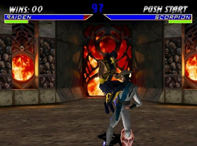

Retro Review: DOOM
Created in 1993 by John Carmack, Tom Hall and iD software, DOOM put players into the boots of a lone space-marine simply named; Doom Guy, as he fought back the demonic hordes from Hell equipped with a diverse range of weaponry. DOOM is fondly remembered as one of the best games of all-time, by nearly all gamers, and one of the most important games in history due to the gameplay innovations it brought us, the controversy it garnered and the entertainment it gave us. Taking off our nostalgic glasses for a moment, let us step back an analyze this game and we just need to be honest with ourselves... Does DOOM hold up? Or is it a casualty of a bygone age?
GAMEPLAY:
DOOM is indeed, the first videogame I ever played in my life. I was around 3 years old when I first started playing this game and I played it off-and-on throughout the years before I finally sat down and played the entire game recently for this Retro Review. What was one of the first things I realized about this game when I played on the nightmare difficulty? The intensity. Seldom times in gaming are as remotely intense as playing DOOM on the hardest difficulty, running from demons, with 5% health, four shotgun shells left and only three monsters standing between you and the exit. This game had me on the edge of my seat, leaning side to side when I was trying to dodge fireballs or rockets, standing up and jumping around when I was running away, desperately seeking a first-aid kit. This level of intensity is practically non-existent in most games nowadays, but the intensity present here is about 90% of the fun and there is absolutely no way you can play this game without your heart pounding and body muscles tensing up. The difficulty in this game is as high as the player wants it to be. The aforementioned "nightmare" difficulty is exactly as it is described, a nightmare. With low ammo, low health and facing seemingly invincible monsters, you are forced to strategize and time your attacks and retreats to stay alive. The shooting, which is the core of the game, is fast, intense and frantic. Shooting down the hordes is fun, running for your life is tense, and searching for the secret areas that are present in every level is a nice addition too. Something that intrigues me about DOOM and early 90's shooters is how big the levels are and how they encourage exploration. Sprawling, non-linear levels with secrets, easter eggs and fantastic artistic touches, it's such a juxtaposition from other first person shooters created now where you are practically dragged through a narrow hallway on a choke chain, limited by cutscenes and invisible walls. The old days of gaming didn't have this, and it is appreciated. The gameplay holds up as well as it ever did.
SOUND:
Usually an underrated element in every game, the music in DOOM is as ageless as possible. The somber tones when you are in the depths of Hell low on health, wondering if another demon is standing on the other side of the door you're about to open, the hardcore metal blasting when you’re running through corridors mowing down the undead with the brand new shotgun you just picked up, the music perfectly accents the feelings and emotions of the player. In addition to the music, the sound effects are top notch. The roars and growls of the monsters echoing through the level makes you tense, the sound of Doom Guy screaming out in pain once your health hits 0% makes your heart jump, the power behind your various weapons and the meaty, wet sounding explosions when rocket hits demon... it all sounds top notch and couldn't possibly be better. Sound effects are hard to describe but just do yourself a favor and watch some DOOM gameplay on YouTube with your eyes closed, and let your imagination run wild with it. Even the simplest sound effects as opening doors, picking up armor or scrolling through the menus, are absolutely perfect. The audio in this game is as timeless and perfect as we remember and upon reflection, DOOM has one of the best soundtracks and it simply has to be one of the best in any game of all-time.
GRAPHICS:
Graphics are a hard thing to talk about in retrospect. You obviously cannot compare DOOM to Half-Life 2 in the sense of graphics. Hardware and technical limitations based off of the respective time periods are obvious, so you have to think about how it looked at the time. Obviously the graphics look dated now, because the game came out in 1993, but that doesn't mean they look bad. Games today are focused around three colors: brown, black and grey. The color palate for games nowadays is dark, dreary and dull for the most part. However, back in this golden era with games like Shadow Warrior, Duke Nukem and DOOM, the colors are bright and vibrant, yet at the same time unsettling and scary. The demons all look scary, the levels set the perfect tone (corpses hanging from the ceiling, heads on pikes, Satanic imagery), the graphics make you feel nervous, unsettled and scared, which really should be commended that a game with graphics this old and simple could instill such emotion from the player. Simply put, the visuals still look great despite being over 20 years old and that is impressive.
VERDICT:
DOOM is one of the greatest games of the 1990s and in the entire history of gaming in general. Everything from the gameplay, to the visuals to the audio, are all fantastic and I actually love and appreciate this game even more now as a 20-year-old adult, than I did as a kid. One of the first games to start the phenomenon of online gaming and deathmatch and many other elements that revoluntionized gaming, DOOM is a relic from a past age and no matter how many years pass, DOOM will always be as fantastic and perfect as it was when it first released back in 1993. 10/10 back then, 10/10 today. Go out and buy DOOM, on your computer, iPhone, Xbox or tablet. Play it to help remind yourself that despite all of the carbon-copy first person shooters that flood the market today, gaming is still worth defending and playing because of games like DOOM.
Retro Review: DUKE NUKEM 3D
Released three years after the masterpiece that was DOOM with a silent protagonist fighting the waves of Hell, 3D Realms released their own classic first-person shooter, starring a vocal, violent, macho hero named Duke Nukem who was all about killing aliens, getting women and spewing off memorable one liners that nearly everyone who grew up in the 1990s knows by heart, even if they never played the game. Duke Nukem as a series since the 1996 heyday has pretty much died off since the debacle that was Duke Nukem Forever, and the name Duke Nukem has now become a punch line in the gaming industry, but let us forget that for the sake of this review. How does Duke Nukem stack up today?
GAMEPLAY:
A first-person shooter that consists of pretty standard gameplay: You are at point A, have to get to point B by shooting down countless aliens with a variety of weapons, searching for colored keycards to open up their respective doors and at the end getting graded by your performance. Tried and true, this simplistic formula works. While both Duke Nukem and DOOM are first-person shooters with relatively the same gameplay and build, they are entirely different games. DOOM was all about the atmosphere, you projecting yourself onto DOOM Guy as if you were fighting the demons. DOOM was built all around tension, fear and an unsettling atmosphere. Duke Nukem is all about style. While the tension and fear in this game when compared to DOOM is nonexistent, but that is fine because this game is not trying to be DOOM. Duke Nukem is all about over-the-top action that is primal in the enjoyment the player experiences. The one-liners from The Duke himself, the scantily clad women and the rock n’ roll music (particulary the intro song) playing in ever level, gives the game the campy, cartoonish, over-the-top feel that you hope for. The weapons in this game are different to the weapons compared to DOOM. There is the typical handgun, shotgun, machine gun, rocket launcher, but Duke Nukem has a few different tricks up it's sleeve. Pipe bombs, a shrink ray, a freeze ray and a jetpack just to name a few, are all new awesome elements included into this game that add a new dimension to the game. Duke Nukem has a great deal of exploration in it. Many hidden areas that can only be found by opening secret doors, blowing up walls, using the jetpack to get to high places, the exploration in this game is pretty impressive. Also, each new environment you fight in brings a new element to the gameplay, but more on the environments later.
SOUND:
Voiced by Jon St. John, Duke Nukem is a character with a badass voice that perfectly accents the situation. The hyper-masculine voice acting that goes along with the sounds of gun fire and explosions is a great combination that keeps players interested. The explosions sound powerful, the music is great and the weapons all sound good in addition to the various sounds of the enemies you face all sound formidable. This game has really good sound design on all fronts.
GRAPHICS:
Colorful, raunchy, violent and alluring. The graphics in this game are particularly enjoyable to look at, and in some instances, even more enjoyable than DOOM. The variety of locations in Duke Nukem 3D really makes you reflect and appreciate the graphics even more. Starting in the streets of Hollywood, you progress through nightclubs, movie theaters, hibachi grills, football stadiums and even outer space, with a nice view of Earth from the space station. The variety of the locations give the game a nice visiual pop that DOOM did not always have. Simply put, the graphics are awesome and are better than those in DOOM due to the variety of locations and how each one is distinctly different from the last.
VERDICT:
Duke Nukem as a character is probably one of the most iconic characters in gaming and in my eyes is part of the "classic" first-person shooter "Holy Trinity" along side Doom Guy and William Blazkowicz from the Wolfenstein series. Duke Nukem will always be compared to DOOM and both are relics of a past age that many wish would come back. While in my eyes DOOM laid the foundation of all first-person shooters and gaming in general, Duke Nukem ran with the formula and improved in particular areas. The exploration, weapons and gadgets, variety of environments and enemies with a tongue-in-cheek humor and fast, frantic and fun action that captivated gamers back then, still holds up today. While many have forgotten Duke Nukem after the flop that was Duke Nukem Forever, Duke Nukem 3D is still a great game to play and hopefully with a new era of consoles coming at us, let us hope that both The Duke and DOOM Guy can make their respective returns to gaming.
Retro Review: Mortal Kombat 4
Mortal Kombat is a name that has become synonymous with controversy and nostalgia, and with this review, it's time to look back and check out the first 3D Mortal Kombat, specifically on the N64.
GAMEPLAY:
Without a doubt the most single important aspect of any game, the “how it plays/controls” factor, is the biggest problem with MK4. Back in the heyday of Sony vs. Nintendo, one thing was always discussed, the lack of a good fighting game on the N64, and this is the truth. The N64, particularly it's controller and control scheme have aged horribly and in a game like Mortal Kombat, or any fighting game for that matter, it is all about the control, speed and flow of the combat. The horrific N64 controller and terrible button layout really do hamper the game when attempting to play it, especially when on higher difficulty settings, where true control and timing is needed to succeed. The awkward layout of the N64 controller is bad enough, but the fact that it seems the N64 is struggling to keep up the game up and running with these 3D graphics, make the game practically unplayable. It just seems like the N64 was simply not created for fighting games.
SOUND:

There is pretty decent sound quality in this game, which I found surprising. The music is a tad repetitive and the voice acting is laughably cheesy and over the top, especially in cut scenes, but I appreciate the effort. Midway games could have taken the easy way out and just given us a text box and still images, but they actually took the time to write a script and record voice overs, however laughable they may be. The Mortal Kombat announcer however is as fantastic as always. Shao Khan's voice never gets old and this is true for every single Mortal Kombat game that was ever created. All in all, the sound is better than what you would expect, but it is nothing special.
GRAPHICS:
The Mortal Kombat's first leap to the realm of 3D was a rough one. The graphics in this game are less than ideal, but one has to keep in mind that this was made back in 1997 and very few games actually looked good in 3D at this time. The characters look blocky and cartoonish, but there really isn't anything you can do about that, especially considering the hardware limitations. However, the environments are pretty bland and lifeless which is disappointing. The game overall is just not fun to look at, and while the fatalities are the strongest part of any MK game, they are the weakest in the series in this game. Many look ridiculous and just flat out silly. The graphics overall are bland, uninteresting and really not pleasant to look at whatsoever. Mortal Kombat 3 looked better in 2D.
VERDICT:
Sadly this is one of those games you remembered playing as a youth and loved for all the wrong reasons. I loved Mortal Kombat 4 when I had it on my N64 because it was violent and had a mature rating. I would have played any game as a kid and loved it as long as there was an M rating and blood on screen. Looking back at it, the controls are broken and the game looks poor. MK4 is just a game that did not age well at all, and those who loved this game as a kid and are considering picking it up for a quick nostalgia pick-me-up should look elsewhere, because this game was a very big letdown. Pass this game, and pass any fighting game that was on the N64.